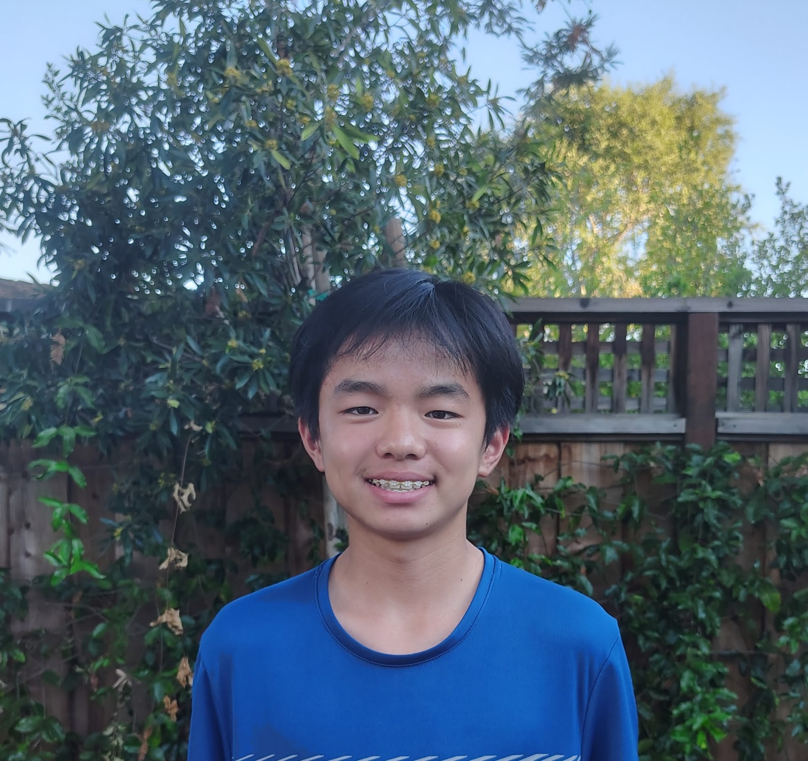
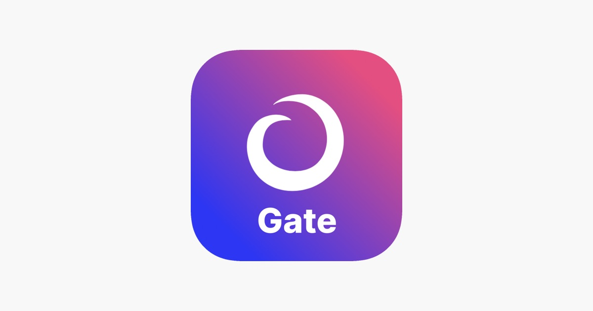
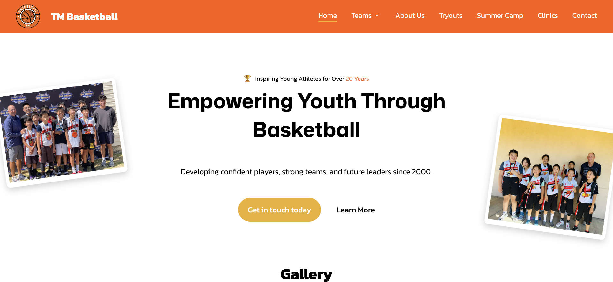
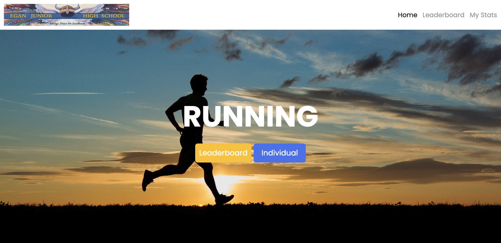

Expressive Indic Audiobook Generation with CLAP-Based Retrieval
William Xing et al. · Under Review at ICASSP, 2027
I’m a student, coder, and athlete who loves turning big ideas into real projects. Whether I’m building web apps, experimenting with machine learning models, or designing sleek websites, I enjoy solving problems and learning new tools along the way. Outside of coding, I’m passionate about sports—basketball, cycling, running, and even training for triathlons. I believe in pushing myself both mentally and physically, and I carry that same energy into academics, research, and personal projects. I’m curious about everything from artificial intelligence to cultural studies, and I’m always working on becoming more efficient, more creative, and more impactful. My long-term goals? To build innovative technologies, grow as a leader, and create work that makes a real difference.
View My Work
Jan 2026 - Present
Worked with Stanford postdoc Qing Yang to apply machine learning for multi-source satellite flood mapping. I created a full ML pipeline for water body pixel segmentation with a UNet and the modern DeepLabV3 segmentation model and completed another project on rainfall-runoff modeling using a LSTM and transformer.

Feb 2026 - Present
Interned at Opun AI to build AI / ML features for their Opun app. First, I built a computer vision-based drivers license detection pipeline along with a reference app demonstrating its capabilities. Then, I built a REST API wrapper around Gemini for image and video generation with Fast API and Uvicorn.
Feb 2026 - Present
Interned at PocketFM to research CLAP-based retrieval for expressive Hindi audiobook generation, beating out all existing open-source models. I was the lead author, and the paper was accepted to an ICML workshop.
Jun 2025 - Jan 2026
Conducted a large-scale water contamination research study, integrating a variety of datasets to achieve SOTA results in arsenic contamination prediction in water. I was the lead author, and the paper was accepted to AAAI workshop.

Feb 2025 - May 2025
Designed and developed a website for TM Basketball, highlighting team offerings (camps, clincs, practices, etc.), and photos + videos, helping attract new customers weekly.

Sep 2024 - Mar 2025
Created a school mile running website to showcase items, track progress and highlight student achievements, making performance data easy to access and share.
William Xing et al. · Under Review at ICASSP, 2027
William Xing et al. · ICML Workshop, 2026
William Xing et al. · AAAI Workshop, 2026